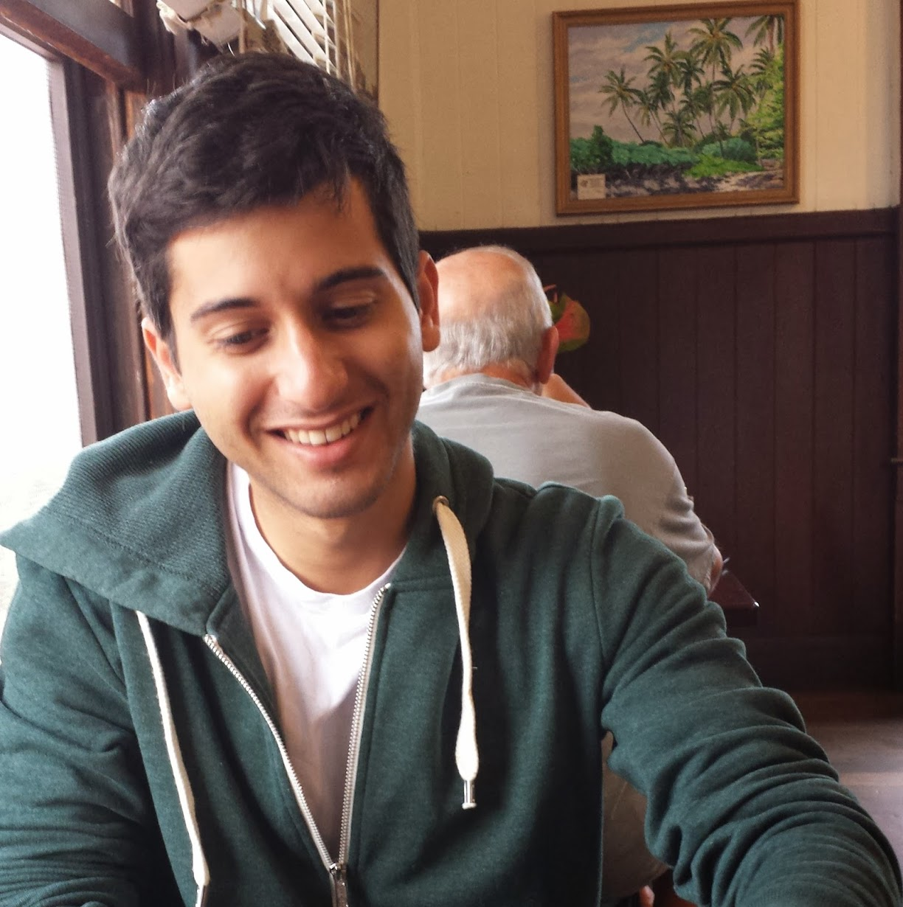

A returned Peace Corps Volunteer with experience in international development, American politics, the Middle East and North Africa. I've been involved in everything from political campaigns to latrine-building. I'm a big fan of change I can digest.